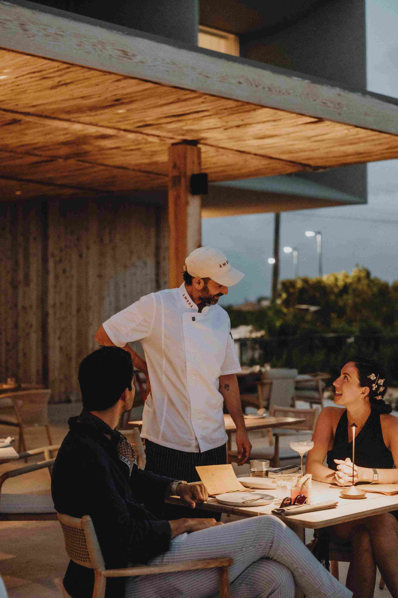

Grilling is a popular cooking method that can bring out delicious flavors in your dishes. Whether you're a beginner or a seasoned grill master, there are essential steps you need to follow to create perfect grilled dishes every time.
Firstly, it's important to choose the right type of grill for your needs. Gas grills are convenient and easy to use, while charcoal grills can add a smoky flavor to your food. Consider factors like size, price, and fuel type when selecting a grill.
Next, preparation is key to successful grilling. Make sure your grill is clean before you start cooking to prevent any unwanted flavors. Season your meat or vegetables with salt, pepper, and your favorite herbs or spices for added taste.
When grilling meat, remember to preheat your grill to the appropriate temperature. This will ensure that your food cooks evenly and reduces the risk of undercooking or burning. Use a meat thermometer to check the internal temperature of the meat for doneness.
For vegetables, consider marinating them before grilling to enhance their flavor. You can use a simple marinade of olive oil, garlic, and herbs to add a delicious touch to your grilled veggies.
Timing is crucial when grilling. Different foods require different cooking times, so it's essential to keep an eye on your grill to prevent overcooking. Flip your food halfway through the cooking process to ensure that it cooks evenly on both sides.
Don't forget to let your grilled dishes rest before serving. This allows the juices to redistribute, resulting in a more flavorful and tender meal. Cover the food with foil and let it rest for a few minutes before cutting into it.
Cleaning your grill after each use is essential for maintenance and food safety. Scrub the grates with a grill brush to remove any residue, and empty the grease trap to prevent flare-ups during future grilling sessions.
Experiment with different recipes and techniques to discover your favorite grilled dishes. Whether you're cooking burgers, steaks, chicken, or vegetables, grilling is a versatile cooking method that can be enjoyed year-round.
By following these essential steps and tips, you can create perfect grilled dishes that will impress your family and friends. So fire up the grill, get cooking, and enjoy delicious meals hot off the flames!
Avoiding Common Mistakes in Creating an Elegant Atmosphere at ÁMBRA